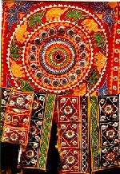
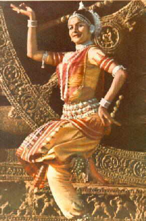
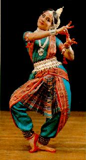
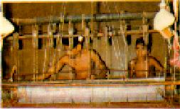
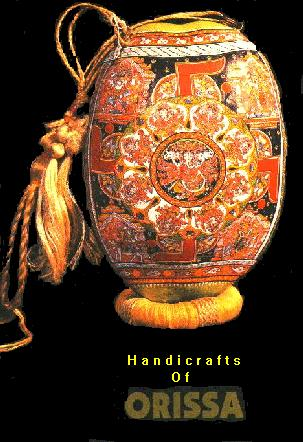
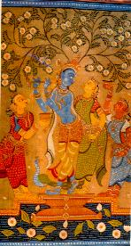
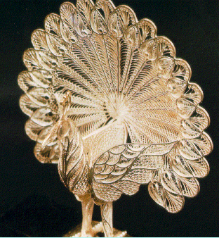

ART and CULTURE

A village near Bhubaneswar, Pipili, is the home of the gayest, most colorful and original awnings, canopies, garden and beach umbrellas, shoulder & hand bags etc. The artisans cut colourful fabric into a variety of shapes and designs - birds, animals, flowers, and geometric patterns and stitch them on a contrast colored back cloth to produce lively pieces. The cocktail effect of the colors will certainly please the searching eyes.

Artist:Sanjukta Panigrahi
Odissi is one of the finest forms of Indian Classical Dance. Evolved out of spiritual consciousness, it formed an essential part of the ritualistic services in the important shrines of Orissa. Devotional in spirit, it is marked for its elaborate grace and lyrical charm, revealed through rounded movements. Attitudes and posters typical of the form resemble the exquisite sculptured figures of the great temples of Orissa. Yet another pose of the striking dance of Orissa.

The bold designs, the ecstatic patterns, the animal and floral motifs, the colour and texture of the Handloom fabrics of Orissa have made them objects of fascination. Shown below is a handloom weaver at work.


Courtesy:Somdutt Behura
Shopping in Orissa is a joy. You don't look there for what the modern industry can give you, but for unique and exquisite handicrafts, made by those fingers whose forerunners had with such dexterity and skill created the magnificient Orissa temples. The handicrafts of Orissa include silver filigree, horn work, folk paintings (Pattachitra), metalware, applique work, stoneware, silk and cotton handloom etc. A Pattachitra showing Sri Krishna Raasaleela is shown below:

Courtesy:Somdutt Behura
An excellent introduction to the Stone Sculptures of Orissa has been presented by Somdutt Behura. Of no less importance is the stoneware of Orissa, particularly the black stone bowls and plates of Khiching, and multi-colored serpentine stone statuettes. Beautiful and delicate soapstone statuettes are also available at Puri.

Courtesy:Somdutt Behura
An excellent introduction to the Silver Filigree of Orissa has been presented by Somdutt Behura. Few places in the world can boast of such delicate and fine silver filigree work. The wires are gossamer thin and designed to go through the eye of a needle. The products are light and elegant. Cigar boxes, jewellery, baskets of all sizes and decorative trays are a few things to pick up.
Your suggestions are always welcome...


| This Page Has Been Accessed | Times Since |
|---|
was last updated on :